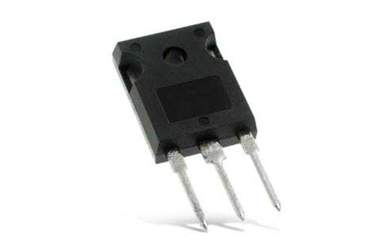

الثايرستور Thyristor:
يعتبر الثايرستور جيلًا متطوّرًا من الترانزستور، جاء وليدًا لأشباه الموصّلات، فهو عبارة عن: “مكوّن إلكترونيّ من أربع طبقات من أشباه الموصّلات- السيليكون- التي تسمح بمرور التيّار انتقائيًّا خلالها، في اتّجاه محدّد، ونبضة محدّدة، وتكون على الترتيب P1, N1 ,P2, N2، ذات ثلاثة أقطاب، مصعد A، وبوبة G، ومهبط K”.
فهو باختصار عبارة عن اثنين من الترانزستورات NPN، و PNP موصَّلين على التوازي والتعاكس، ومنه ما يُعرف باسم Lascr، ووحدة قياسه الأوم.
وظيفته:
يعمل الثايرستور على التحكّم في دوائر القدرة الڤولتيّة؛ فهو يعمل كمفتاح لقطع التيّار الكهربائيّ المتناوب، ذو سرعة عالية، وقوّة تحمّل كبيرة للتيّارات العالية، تصل إلى 2000 أمبير، على الرغم من صغر حجمه، وهو يماثل عمل (الدَّيود)، ويُستخدم في التحكّم في سرعة المحرّكات، والإنفرترات Inverters، وتغيير شدّة الإضاءة، وشواحن البطّاريات، وغيرها عن الثايرستور من هنا.
